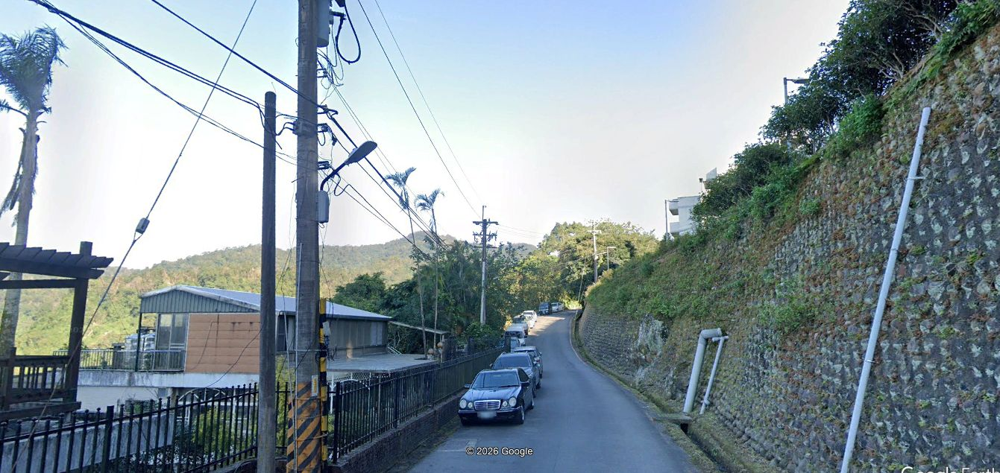
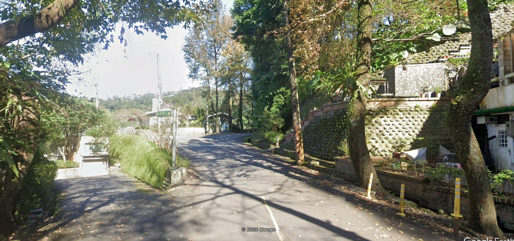
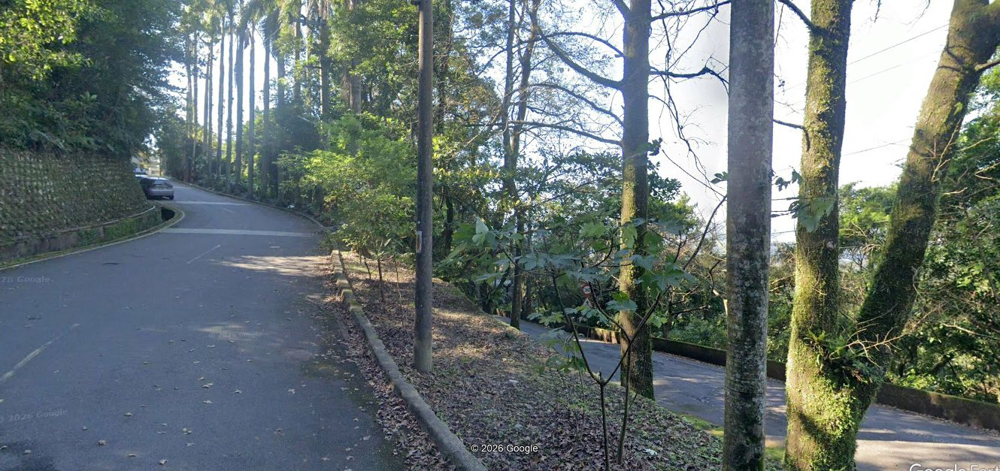
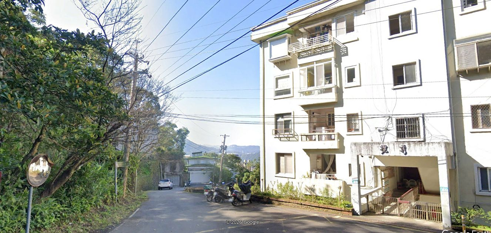
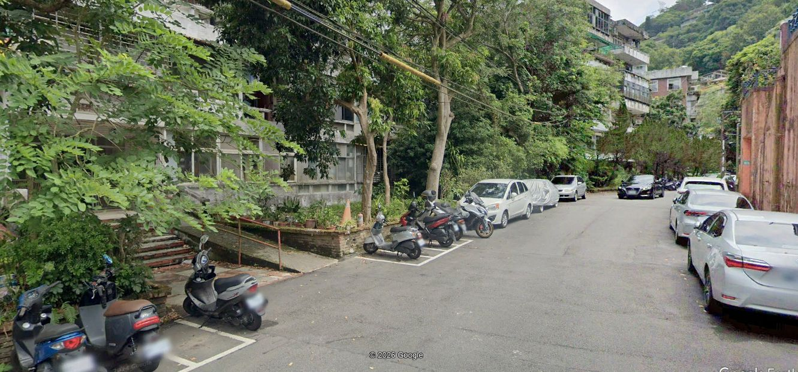
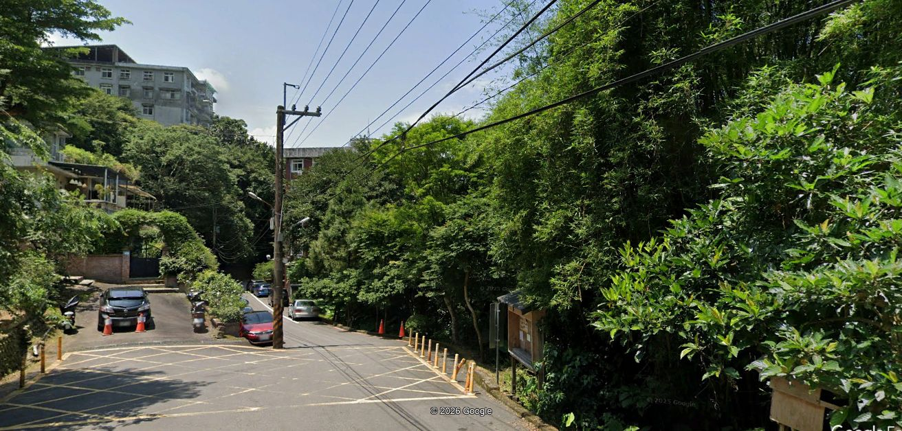
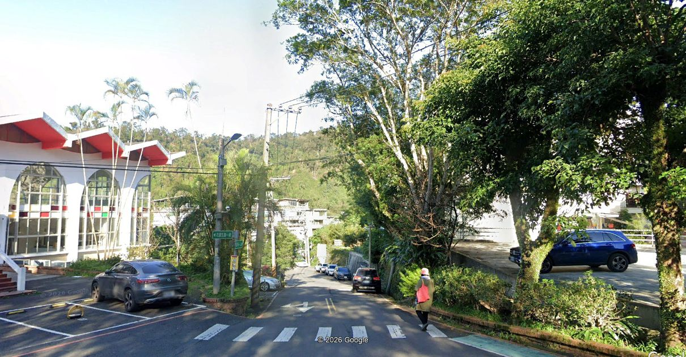
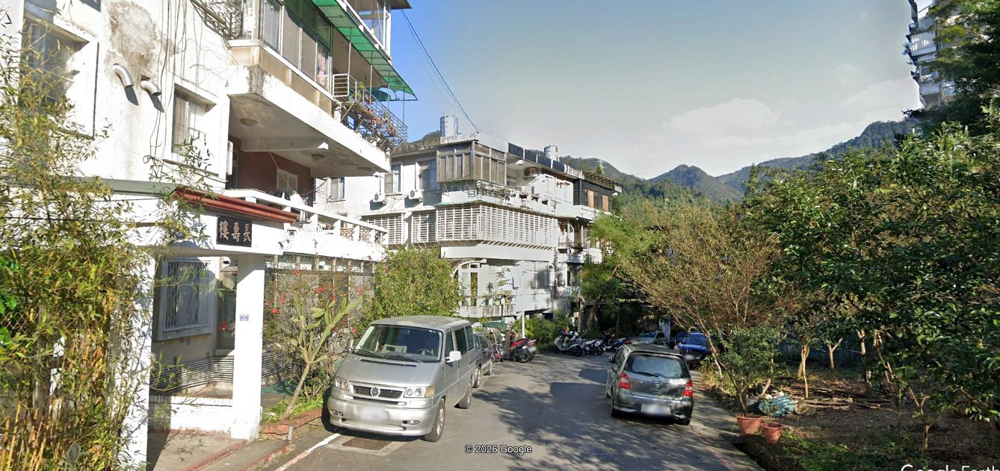
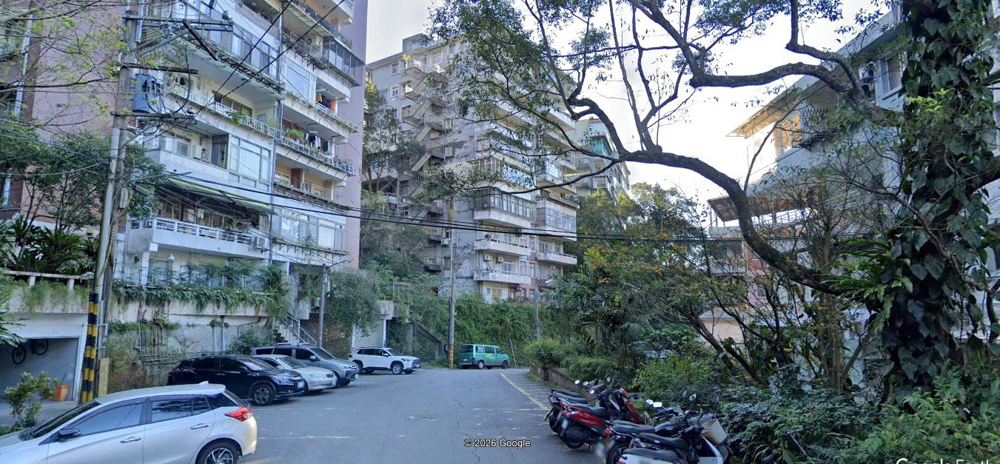

Biking 1b
Going back towards the left/right divide you go up the short steep incline
short inclineViewRide past the circle continuing east and start to go up

upViewGetting steeper there is turn into the last incline section

turnViewAt the top, the road continues up, but on this ride I turn around just past a building on the eastern side of the community

high eastViewGoing down is a very fast ride following roads traveled already - past the circle all the way to the building at the bottom west. Then turning around going back to the circle and down past the back of the park but continuing forward past the side of the parking lot on road 2

road 2ViewFollowing this road, then going up a really short incline to turn around and ride back to the park area

head backViewAt the park intersection turn right and go down past the parking lot

parkingViewHeading back towards our house on the narrow road

narrowViewAt the intersection where the ride started, turn right and go for a bit then turn around to go home

final turn ViewThat is the end of a short bike ride in our community - carry the bike back up the steps and all done - relax